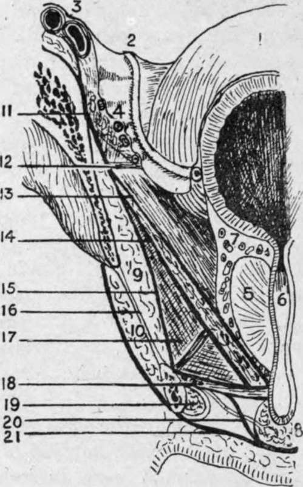

The Pelvis. Part 2
Description
This section is from the book "Surgical Anatomy", by John A. C. MacEwen. Also available from Amazon: Surgical Anatomy.
The Pelvis. Part 2
The prostate, neck of the bladder, vesiculi seminales and base of the bladder between them, and last 2½ inches of the rectum are excluded by the attachment of the visceral layer of pelvic fascia from the pelvic cavity. The internal iliac vessels and branches lie on the pelvic aspect of the pelvic fascia, and thus their perforating branches are ensheathed by the fascia as they leave the pelvis ; whereas the spinal nerves lie outside the fascia. The obturator vessels and nerves form an exception to the rule, passing through a special aperture in the pelvic wall. Separating the parietal pelvic fascia from the peri-
toneum and uncovered pelvic viscera is a loose layer of fatty tissue, corresponding to the extraperitoneal fatty tissue of the abdomen, with which it is continuous. This tissue is also continuous with the connective tissue of the hip through the obturator and sacro-sciatic foramina, and in it are the iliac vessels, ureters, lymphatic glands, vasa deferentia, and round ligaments. While this tissue is continuous throughout, it is shut into compartments by septa running in from the level of the sacro-iliac articulation between the bladder and rectum in the male, and uterus and rectum in the female. To inflammatory conditions occurring in this layer, the term pelvic cellulitis is properly applied.
Fig. 29.-Anterior Vertical Section of Pelvis from Front.
(Modified from Testut.)
1. | Bladder. | 13. | Recto-vesical fascia. Levator ani muscle between 13 and 14. |
2. | Vas deferens. | ||
3. | Iliac vessels. | 14. | Anal fascia. |
4. | Obturator vessels. | 15 | Obturator fascia. |
5. | Prostate. | 16. | Obturator membrane. |
6. | 17. | Ischio-rectal fossa. | |
7 | Prostatic plexus. | 18. | Two layers of triangular ligament and compressor urethras and pudic vessels (superficial layer of triangular ligament=deep perineal fascia). |
8. | Bulb. | ||
9. | Obturator internus. | ||
1O. | Obturator externus. | 19. | Corpus cavernosum. |
1l. | Iliac fascia. | 20. | Expansion from superficial layer of triangular ligament to invest bulb. |
12. | White line. | ||
21. | Deep layer, superficial fascia. |
The pelvic peritoneum, continuous with that of the abdomen, partially lines the cavity, and possesses generally lax parietal but firm visceral attachments. Owing to its being thrown into folds by underlying structures, the pelvic peritoneum presents three fossce-an anterior, middle, and posterior-which are at different levels, the anterior being the highest, and the posterior the lowest (see Fig. 32).
The anterior pelvic fossa contains the bladder, and is bounded in front by the symphysis, and behind by the fold of the ureter-a peritoneal ridge formed by the underlying pelvic ureter, which extends from the postero-lateral aspect of the pelvis at the level of the sacro-iliac articulation to the lateral angle of the bladder. A paravesical fossa may be seen occupying either side of this fossa when the bladder is empty. The middle pelvic fossa is narrow, particularly mesially ; contains the vasa deferentia and vesiculi seminales in the male, and uterus in the female ; and is bounded by the fold of the ureter in front, and by the sacro-genital fold behind. This sacro-genital fold projects backwards from the posterior surface of the bladder when empty as a distinct ridge fully -½ inch deep, enclosing the upper extremity of the vesiculi seminales, the vasa deferentia, and some unstriped muscle constituting the sacro-genital ligament, between its layers. This ligament curves backwards, and is connected at the back of the rectum with the lower end of the anterior surface of the sacrum. This fold also exists in the female, constituting the titero-sacrai, or fold of Douglas. The posterior fossa is the lowest, and contains the rectum, which, when empty, as in the case of the bladder, is bounded by a lateral depression on either side, caiied the pararectal fossa. This posterior fossa is bounded in front by the sacro-genital folds, and behind by the sacrum, etc. The obturator fossa presents on the lateral pelvic wall, being bounded by the external iliac vein in front ; the vas deferens, or round ligament, below ; and the ureter behind. The pelvic attachment of the broad ligament in the female divides this fossa into two parts, of which the posterior is termed the fossa ovarii.
In addition to the viscera mentioned, the true pelvis frequently contains coils of small intestine, pelvic colon, and portion of caecum and tip of the appendix, particularly when the rectum and bladder are empty. The external iliac vessels produce a peritoneal fold at the posterior part of the pelvic brim, and then, deviating outwards toward the under-surface of Poupart's ligament, they form a triangle, bounded internally by the ilio-pectineal line, and below and in front by Poupart's ligament, which is called the trigonum femorale.
Fig. 30.-Posterior Vertical Section of Pelvis from Behind.
(Modified from Testut.)
1. Bladder.
2. Vas deferens.
3. Ureter.
4. Obturator vessels.
5. Vesícula; seminales.
6. Rectum.
7. Anus.
8. Sphincter.
9. Obturator interims.
11. Iliac fascia.
12. White line.
13. Kecto-vesical fascia.
Levator ani muscle between 13 and 14.
14. Anal fascia.
15. Obturator fascia.
17. Ischio-rectal fossa.
18. Pndic vessels and nerve in Alcock's cana1.
19. Posterior extremity of triangular ligament.
The aorta bifurcates at the level of the fourth lumbar vertebra on its left side, forming the two common iliac arteries.
Fig. 31.- View of Pelvic Basin from Above. (Modified from Testut.)
1. | Obturator internus. | 5 | White line. | 9. | Rectum. |
2. | Levator ani. | 6. | Obturator vessels. | 1o. | Coccyx. |
3. | Coccygeus. | 7. | Symphysis. | 11. | Aperture tor gluteal vessels. |
4. | 8. | Prostate, etc. | 12. | Spine of ischium. | |
(Dotted line indicates outline of lower border of pelvis.) | |||||
These run down and out to the sacro-iliac articulations, where they bifurcate to form the external and internal iliac arteries. The external iliac artery, following the internal border of the psoas muscle, first runs along the pelvic brim, and then, tending outwards, reaches the under-surface of Poupart's ligament, and becomes the femoral. The internal iliac curves down into the pelvis, and divides into anterior and posterior divisions at the upper portion of the great sacrp-sciatic notch.
The common iliac on both sides is crossed near its termination by the ureter, and is also crossed by the sympathetic fibres running from the aortic to the hypogastric plexus. Occasionally, however, the ureter crosses the upper part of the external iliac artery. The left vessel is also crossed by the inferior mesenteric vessels. The right vessel is about 2 inches, and the left about 1¾ inches long. The external iliac is nearly 4 inches long. The course of common and external iliac vessels is indicated by a line from a point ½ inch below, and to the left of the umbilicus, to a point on Poupart's ligament, midway between the anterior superior spine and the symphysis pubis. The line should have a slight external convexity, and the upper one-third represents the common iliac vessel.
Continue to:
- prev: The Pelvis
- Table of Contents
- next: The Pelvis. Part 3